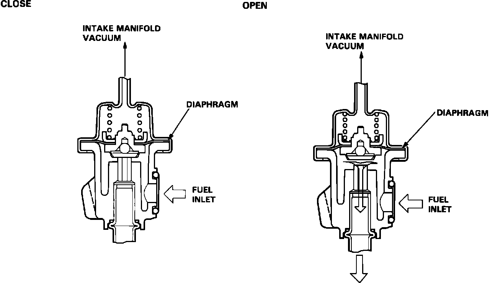

Fuel Pressure Regulator: Description and Operation
Fuel Pressure Regulator:

The fuel pressure regulator maintains constant fuel pressure to the injectors to ensure accurate fuel delivery. It is attached to the right of the rear fuel rail.
When fuel pressure exceeds 50 psi above manifold pressure, the diaphragm is forced upward and excess fuel is fed into the fuel return line.